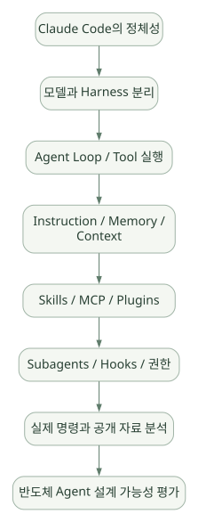
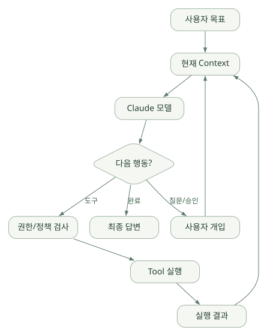

큰 그림 / 단원 01
모델을 넘어서는 작업 환경 이해하기
Agent·Harness·SDK와 CLI·IDE·자동화의 차이
먼저 연결해 보기
모델에 질문해 문장을 받는 것과, 파일·명령·도구의 결과를 관찰하면서 작업을 이어 가는 것은 다릅니다. Claude Code는 이미 구성된 실행 환경을 사용하고 확장하는 관점에서 이해해야 합니다.
먼저 Claude 모델과 Claude Code, Agent SDK의 역할을 나누세요. CLI·IDE·데스크톱·웹과 비대화형 실행은 파일·인증·승인 경계가 같지 않을 수 있습니다. 아래 설치와 명령은 원문의 학습용 예시이며 이 페이지에서 실행하지 않습니다.
읽는 관점모델, 실행 환경, 프로그램 인터페이스와 모델 서빙 인프라를 같은 제품 범위로 비교하지 마세요.
1. 핵심 요약과 학습 지도#
1.1 한 문장 정의#
Claude Code는 Claude 모델을 중심으로 파일 탐색·수정·명령 실행·도구 연동·검증을 반복 수행하는 Agentic Coding 환경이자 Agent Harness다. CLI를 중심으로 시작했지만 IDE, 데스크톱, 웹 등의 다양한 표면에서도 접근한다. [R01][R02]
- Claude 모델은 무엇을 조사하고 어떤 행동을 할지 판단한다.
- Claude Code Harness는 모델이 실제 환경과 상호작용하도록 도구·실행·권한·컨텍스트·세션·확장 구조를 제공한다.
- Claude Agent SDK는 이 능력을 Python/TypeScript 애플리케이션에서 재사용하게 하는 별도 프로그램 인터페이스다. [R25]
쉬운 비유: 모델 = 문제 해결을 생각하는 두뇌, Claude Code = 두뇌가 파일을 읽고 코드를 수정하고 테스트를 실행하도록 연결하는 작업 환경, Agent SDK = 그 작업 환경을 다른 프로그램에서 호출하는 연결 인터페이스.
1.2 반드시 구분할 여섯 개의 용어#
| 용어 | 의미 | Claude Code에서의 위치 |
|---|---|---|
| LLM | 입력을 받아 텍스트·도구 호출 요청을 생성하는 모델 | Claude 계열 모델, 추론 담당 |
| Agent | 목표를 따라 관찰·판단·행동을 반복하는 시스템 | 모델과 Harness가 결합된 실행 주체 |
| Agent Loop | 모델 호출 → 도구 실행 → 결과 관찰의 반복 | Claude Code의 핵심 동작 패턴 |
| Harness/Runtime | 루프와 도구·컨텍스트·권한·실행 환경을 붙이는 계층 | Claude Code 본체 |
| Framework/SDK | 개발자에게 Agent를 만드는 API·추상화를 제공 | Claude Agent SDK와 비교 대상 |
| Workflow | 정해진 흐름과 상태 전이를 통해 작업 수행 | Claude Code에서 계획·Skills·Hooks·외부 시스템 등으로 구성 가능. 곧바로 BPMN 같은 결정적 엔진을 뜻하지는 않음 |
핵심 오류 방지: CLAUDE.md는 지시·컨텍스트이고, SKILL.md는 필요시 적용할 작업 지식, MCP는 도구 연결 프로토콜, Hooks는 특정 이벤트에 실행되는 제어 로직이다. 서로 대체 개념이 아니다.
1.3 학습 흐름#
넓은 도식은 가로로 이동하며 읽을 수 있습니다. 도식 크게 보기 ↗

원문에 수록된 학습용 도식입니다. 노드·화살표·분기 라벨을 보존해 다시 배치했습니다. 세부 조건과 예시·구현의 구분은 앞뒤 본문을 함께 읽으세요.
도식 원문 보기 (Mermaid)
flowchart TD
A[Claude Code의 정체성] --> B[모델과 Harness 분리]
B --> C[Agent Loop / Tool 실행]
C --> D[Instruction / Memory / Context]
D --> E[Skills / MCP / Plugins]
E --> F[Subagents / Hooks / 권한]
F --> G[실제 명령과 공개 자료 분석]
G --> H[반도체 Agent 설계 가능성 평가]이 문서를 읽은 후 설명할 수 있어야 할 것#
- Claude Code 자체와 Claude Agent SDK가 어디서 겹치고 구분되는가?
- 모델의 계획·행동과 Harness의 도구·승인·실행은 어떻게 연결되는가?
- 같은 프로젝트의
CLAUDE.md, Auto Memory, Session transcript,SKILL.md는 어디에 어떤 정보를 넣는가? - Tool을 허용한다고 해도 데이터 보안을 지킬 방법은 무엇인가?
- 반도체용 DB/RAG/분석 Tool을 연결할 때 무엇을 직접 개발해야 하는가?
2. Claude Code의 정체성과 기술 관계#
2.1 Claude 모델 vs Claude Code vs Claude Agent SDK#
| 항목 | Claude 모델/API | Claude Code | Claude Agent SDK |
|---|---|---|---|
| 정체성 | 추론·생성 모델을 호출하는 API | 완성형 Agent 실행 환경과 도구 | 그 Agent 실행 능력을 프로그래밍 방식으로 호출하는 SDK |
| 개발자가 준비할 것 | API 호출, 루프, 도구, 상태, 정책 구현 | 사용 환경과 지시·권한·도구 설정 | 호스트 애플리케이션, 사용자 경험, 정책·서비스 통합 |
| 일반 사용 | 모델로 답변 생성 | 코드 검색·편집·테스트·Git 자동화 | 웹서비스·배치·내부 서비스에 Agent 탑재 |
| Agent Loop | API 자체에 완료된 범용 코딩 Harness가 있는 것은 아님 | 자체 Agent Loop 수행 | Claude Code 계열 루프 사용 |
| 관점 | 모델·API 엔지니어링 | 상호작용하는 완성형 에이전트 | 애플리케이션 임베딩 |
Claude Code를 PydanticAI, OpenAI Agents SDK와 동등한 저수준 라이브러리로 단정하면 비교가 틀어진다. Claude Code는 이미 구성된 Harness를 사용하고 확장하는 측면이 강하다. SDK는 그 기능을 개발자가 호출하는 관점이다. [R01][R25]
2.2 Codex·Hermes·ADK 같은 기술과 비교할 때#
- Hermes Agent: 완성형 Agent Harness 관점에서 비교하기 유용하다. 공개 소스 수준·메모리 구성·기본 도구·운영 철학이 핵심 비교 항목.
- PydanticAI/OpenAI Agents SDK: 자체 애플리케이션에 Agent 로직을 넣을 때의 개발 자유도·책임 범위가 비교 포인트.
- Google ADK/Microsoft Agent Framework: 다중 Agent·세션·워크플로·운영 통제의 추상화를 비교한다.
- vLLM/SGLang: 원칙적으로 모델 서빙/추론 인프라 계층이다. Agent Harness와 동일한 비교 집합에 넣지 않는다.
비교할 때 “기능이 있다/없다”만 보지 말고 기본 제공 / 설정·플러그인 / 외부 서버 / 사용자 코드 / 미확인을 나눈다.
2.3 Claude Code가 일반적인 챗봇을 넘어서는 이유#
질문: “공정 데이터 EDA를 수행해 이상 징후를 요약해 줘.”
- 일반적인 텍스트 챗봇: 데이터 설명이나 분석 코드 예시를 답할 수 있다.
- Claude Code: 권한이 주어진 경우 데이터 파일을 읽고, Python 코드를 작성하고, 실행하고, 오류를 확인하고, 수정해 결과 파일을 만들 수 있다.
- 단, Tool 실행 결과가 올바르거나 안전하다고 자동 보장하지 않는다. 데이터 권한, 통계 설계, 결과의 도메인 타당성은 별도 검증해야 한다.
3. Agent와 Harness의 기초#
3.1 단일 응답형 LLM vs Agent#
단일 응답형: 입력 → 모델 → 결과.
Agent형: 입력 → 모델 → 행동 선택 → Tool 실행 → 결과 관찰 → 다음 행동 → 완료.
넓은 도식은 가로로 이동하며 읽을 수 있습니다. 도식 크게 보기 ↗

원문에 수록된 학습용 도식입니다. 노드·화살표·분기 라벨을 보존해 다시 배치했습니다. 세부 조건과 예시·구현의 구분은 앞뒤 본문을 함께 읽으세요.
도식 원문 보기 (Mermaid)
flowchart LR
U[사용자 목표] --> P[현재 Context]
P --> M[Claude 모델]
M --> D{다음 행동?}
D -->|도구| G[권한/정책 검사]
G --> T[Tool 실행]
T --> R[실행 결과]
R --> P
D -->|완료| O[최종 답변]
D -->|질문/승인| H[사용자 개입]
H --> P이 다이어그램은 설명용 추상화다. 실제 서비스 내부 분기와 함수 이름을 뜻하지 않는다.
3.2 Agent Loop의 핵심 구성요소#
- Goal: 수행할 목표. 예: 웨이퍼 불량 패턴 분석.
- Context: 현재 프로젝트 파일, 지시, 대화 요약, 도구 출력.
- Model: 다음 행동을 판단하고 Tool 입력을 생성.
- Tool layer: Read, Grep, Edit, Bash, MCP 등.
- Permission/Policy: Tool 사용 승인·차단·격리.
- State/History: 이전 메시지와 작업 상태.
- Observation: Tool 실행 결과, 에러, 테스트 결과.
- Stop: 모델이 결과를 마무리하거나 실행이 중단·차단·실패하는 시점.
3.3 왜 Harness가 중요한가?#
같은 Claude 모델을 써도 Harness에 따라 다음이 달라진다.
- 어떤 파일·시스템·도구를 읽고 실행할 수 있는가?
- 반복 실행 중 Context를 어떻게 관리하는가?
- 악성 지시와 위험한 명령을 어떻게 차단하는가?
- Subagent를 어떻게 실행하고 결과를 통합하는가?
- 오류 발생 시 누가 재시도하고 언제 멈추는가?
- 로그, 비용, 결과 재현성을 어떻게 확보하는가?
이 때문에 모델 성능만으로 Agent 프레임워크를 평가할 수 없다.
4. 실행 환경·설치·인터페이스#
4.1 지원 표면과 특징#
공식적으로 터미널 CLI, VS Code/JetBrains 연동, 데스크톱, 브라우저 등의 사용자 경험이 있다. 모든 화면·기능이 완전히 동일하다고 가정하지 않는다. 일부 기능은 특정 계정, 호스팅, 플랫폼, 배포 기능 플래그에 좌우된다. [R02]
| 표면 | 주된 장점 | 주의할 점 |
|---|---|---|
| Terminal CLI | 프로젝트 탐색·쉘·Git·스크립트 자동화 | 로컬 권한·네트워크 노출 주의 |
| IDE 확장 | 코드 탐색·변경 확인·개발 흐름 통합 | IDE별 지원 차이 |
| Desktop / Web | 비개발자 접근성, 원격 세션 연계 | 로컬과 클라우드의 파일·인증·보안 경계가 다름 |
claude -p |
단발 자동화, CI, 셸 파이프 | 대화형 승인 흐름이 없는 경우 정책을 더 엄격히 설계 |
| Python/TypeScript SDK | 애플리케이션 내부 통합 | SDK와 인증·실행 인프라 개발 책임 구분 |
4.2 설치 및 기본 명령#
공식 저장소는 네이티브 설치 경로를 안내하고, npm 전역 설치는 더 이상 권장하지 않는다고 표시한다. 기업 PC에서는 우선 소프트웨어 설치 정책을 확인한다. [R02]
# macOS / Linux 공식 설치 예시: 실행하기 전 스크립트 출처와 회사 정책을 검토
curl -fsSL https://claude.ai/install.sh | bash
# Windows PowerShell의 공식 안내 예시
# irm https://claude.ai/install.ps1 | iex
# 시작
cd /path/to/your/project
claude
# 현재 설치 상태 확인: 명령과 출력 형태는 설치 버전에 따름
claude --version쉘에서 받은 스크립트를 곧바로 실행하는 습관은 폐쇄망·사내 PC에 적절하지 않을 수 있다. 회사가 승인한 패키지/서명 검증 절차를 우선한다.
4.3 자주 쓰는 CLI 명령#
claude # 대화형 실행
claude "이 코드베이스를 설명해줘" # 첫 질문과 함께 실행
claude -p "현재 디렉터리 구조를 요약해줘" # 비대화형 1회 작업
claude -c # 최근 대화 이어서 실행
claude -r # 저장된 대화 선택/이어가기 (버전별 도움말 확인)
claude --help-p는 모델 응답만 출력하는 단순 1회 LLM 호출과는 다르다. Tool 사용·Agent Loop가 필요한 질문이라면 내부에서 복수 행동을 수행할 수 있다. --allowedTools, --output-format, --max-turns 같은 옵션은 CLI 레퍼런스의 조합·버전 제약을 반드시 확인한다. [R17][R18]
4.4 Plan mode·수정·검증#
다음 세 가지 작동 스타일을 의식적으로 구분하면 좋다.
- 탐색·질문: 파일을 조사하고 분석 내용을 제시하되 변경은 최소화.
- 계획 수립: 변경 전에 목표·영향·검증 계획을 승인받는다. 계획은 실행의 결정성을 보장하지 않는다.
- 실행·검증: 변경 후 테스트·린트·정형 결과 확인을 반복한다.
반도체 데모 준비에서는 처음부터 자동 수정하기보다 분석 경로를 먼저 고정하고, 계산 코드를 검증한 다음 변경 권한을 단계적으로 넓히는 접근이 좋다.